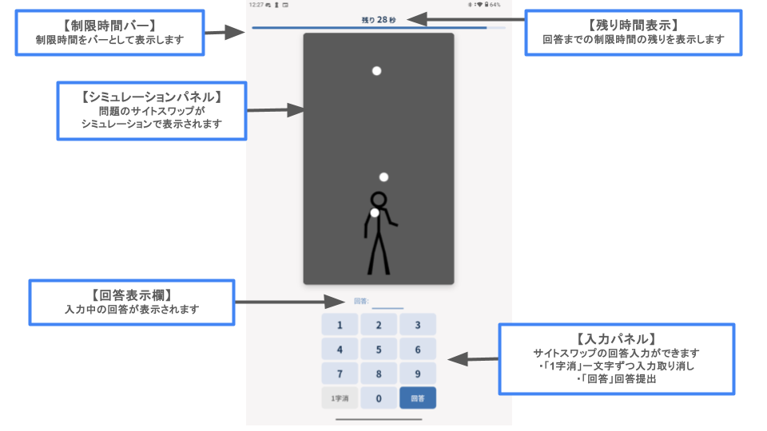

「SS センス」は、ジャグリングのシミュレーションを見て、そのサイトスワップ（投げ方を表す数字）を当てるゲームです。
各ゲームには制限時間があり、画面上部のバーで残り時間が分かります。
不正解でも、制限時間内であれば何度でも回答し直せます。早く正解するほど有利です。
ジャグリングのパターンを数字の列で表す記法です。各数字はボールを投げてからキャッチするまでのビート数を表します。
3 … 3ボールカスケード（基本パターン）
531 … 3ボールの技
97531 … 5ボールの技
ゲームの結果に応じてレーティング（実力の目安となるポイント）が変動します。正解すると上がり、時間切れだと下がります。
レーティングはランキングに反映され、他のプレイヤーと競い合えます。マイページから自分の対戦履歴や成績も確認できます。
・まずは投げる高さ（数字の大きさ）と、左右どちらの手から投げているかに注目しましょう。
・繰り返しの周期（何ビートで同じ動きに戻るか）を数えると、桁数の見当がつきます。
・対戦履歴のパターンをタップすると、簡易シミュレータで動きを再確認できます。